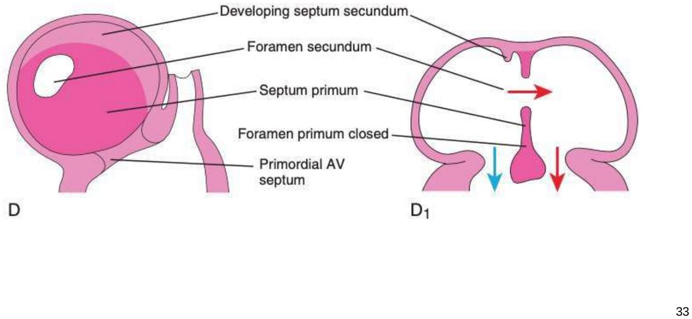
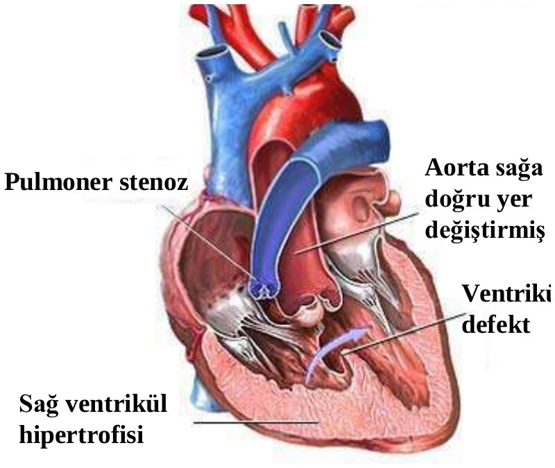

Bölüm 2 · Embryologia cordis et vasorum
Bu bölümün soruları üç bilgiye dayanır: kalp tüpünün türevleri ve dört bölmelenme (sinus venosus'un sol boynuzu, foramen sekundum, 180° dönen çıkıntılar), arkus aorta arterlerinin ve kardinal venlerin kalıntıları, Fallot tetralojisinin bileşenleri. Kalp gelişiminin doğru-yanlış sorusu 2025-2026'da aynı ifadelerle bir kez daha geldi.
Kalp splanknik mezodermden gelişir, 3. haftanın ortasında belirir, 4. haftanın başında atmaya başlar. Septum aorticopulmonale'ye nöral krista hücreleri katılır.
| Kalp tüpünün bölümü | Erişkindeki karşılığı |
|---|---|
| Trunkus arteriosus | Aorta ve truncus pulmonalis'in kökü |
| Bulbus kordis (kalp tüpünün bir parçası) | Ventriküllerin çıkış yolları, sağ ventrikülün trabeküllü kısmı |
| Primitif ventrikül / atriyum | Sol ventrikülün trabeküllü kısmı / aurikulalar |
| Sinus venosus, sağ boynuz | Sağ atriyumun düz duvarlı kısmı (sinus venarum), sınırı crista terminalis |
| Sinus venosus, sol boynuz | Sinus coronarius |
| Pulmoner venler | Sol atriyumun arka duvarından çıkan tek ven atriyuma katılır → sol atriyumun düz duvarlı kısmı |
| Bölmelenme | Nasıl olur? |
|---|---|
| AV kanal | Dorsal ve ventral endokardiyal yastıklar birleşir → sağ ve sol AV kanal |
| Atriyum | Septum primum yastıklara doğru büyür, aradaki açıklık foramen primum. Septum primum'un üstünde delikler birleşir → foramen sekundum (septum primum'a aittir). Sağda kalın septum sekundum gelişir, kenarında foramen ovale kalır. Septum primum foramen ovale'nin kapağıdır |
| Ventrikül | Müsküler septum apeksten yükselir. Foramen interventriculare 7. haftanın sonunda bulbar çıkıntılar ve endokardiyal yastıklarla kapanır → membranöz septum |
| Bulbus ve trunkus | Bulbar ve trunkal çıkıntılar 180° dönerek spiral septum aorticopulmonaleyi oluşturur |


Aynı dört ifade iki kez soruldu (Derleme S29, 2025-2026 S7). Doğru biçimleri: foramen sekundum septum primum'a aittir. AV kanal endokardiyal yastıklarla bölünür, foramen ovale ile değil. Çıkıntılar 180° dönüp septum aorticopulmonaleyi oluşturur, 360° dönüp interventriküler membranı ya da septum ovale'yi değil. Sinus venosus'un sol boynuzu sinus coronarius olur. Pulmoner venler sol atriyumun arka duvarından gelişir.
| Embriyonik damar | Erişkindeki karşılığı |
|---|---|
| 3. arkus arteri | A. carotis communis ve a. carotis interna'nın başı (5. arkus gelişmez) |
| 4. arkus arteri | Solda arcus aortae'nin bir bölümü, sağda a. subclavia dextra'nın proksimali |
| 6. arkus arteri | Aa. pulmonales, solda ductus arteriosus |
| Vitellin arterler / venler | Truncus coeliacus, aa. mesentericae / v. portae, hepatik venler, karaciğer sinüzoidleri |
| Anterior kardinal venler | Aralarındaki eğik anastomoz → v. brachiocephalica sinistra. Sağ anterior + sağ ortak kardinal → VCS |
| Posterior kardinal venler | Büyük ölçüde geriler. VCİ birkaç ven sisteminin (vitellin, sub-, supra-, sakrokardinal) bileşiğidir |
Fallot tetralojisi konusun eşit olmayan bölünmesiyle (septum öne ve sağa kayar) oluşur. Dört bileşeni: pulmoner darlık, VSD, aortanın sağa kayması (ata binen aorta), sağ ventrikül hipertrofisi. ASD ve sol ventrikül hipertrofisi bileşen değildir. En sık konjenital kalp hastalığı VSD (membranöz), yenidoğanda en sık siyanotik anomali büyük arterlerin transpozisyonudur.
Doğru: B. Fallot tetralojisinin dört bileşeni pulmoner darlık, VSD, aortanın sağa yer değiştirmesi (ata binen aorta) ve sağ ventrikül hipertrofisidir.
A yanlış: Fallot'da pulmoner yol daralmıştır (stenoz), tamamen kapalı değildir. Pulmoner atrezi ayrı bir anomalidir. C yanlış: aorta sağa, VSD'nin üzerine kayar. D yanlış: hipertrofi sağ ventriküldedir, çünkü dar pulmoner yola karşı çalışır. E yanlış: ASD Fallot'un bileşeni değildir. Eşlik ederse "Fallot pentalojisi" adı kullanılır.
Not: 2023-2024'te aynı soru şıkların sırası değişik olarak soruldu (doğru şık D).
Doğru (yanlış ifade): E. Bulbar ve trunkal çıkıntılar 180° dönerek spiral septum aorticopulmonale'yi oluşturur. "Septum ovale" diye bir yapı yoktur. Atriyumlar arasındaki açıklık foramen ovale'dir.
A doğrudur: bulbus kordis kalp tüpünün bir bölümüdür. B doğrudur: foramen sekundum septum primum'un üst kısmındaki deliklerin birleşmesiyle oluşur. C doğrudur: dorsal ve ventral endokardiyal yastıklar birleşerek AV kanalı ikiye ayırır. D doğrudur: sol boynuz 4. haftanın sonunda küçülür ve sinus coronarius olur.
Doğru: E. Sol boynuz 4. haftanın sonunda küçülür ve sinus coronarius ile v. obliqua atrii sinistri olarak kalır.
A yanlış: pulmoner ven sol atriyumun arka duvarından çıkar ve sol atriyumun düz duvarlı kısmına katılır. B yanlış: foramen sekundum septum primum'daki deliklerin birleşmesiyle oluşur. C yanlış: AV kanal endokardiyal yastıklarla bölünür. Foramen ovale atriyumlar arasındaki açıklıktır. D yanlış: çıkıntılar 180° dönerek septum aorticopulmonale'yi oluşturur. Bu soru Derleme S29'un "doğru" kökle sorulmuş hâlidir.
Doğru (yanlış ifade): D. A. carotis communis 3. arkus arterinden gelişir. 5. arkus arteri insanda ya hiç gelişmez ya da kısa sürede geriler.
A doğrudur: iki anterior kardinal ven arasındaki eğik anastomoz sol v. brachiocephalica olur. B kabul edilen ifadedir: VCİ bileşik bir damardır ve kaudal kısmı posterior kardinal sistemin (sakrokardinal venler) türevidir. C doğrudur: vitellin venler karaciğer sinüzoidlerini ve hepatik venleri oluşturur. E doğrudur: vitellin arterler truncus coeliacus, a. mesenterica superior ve inferior olur.